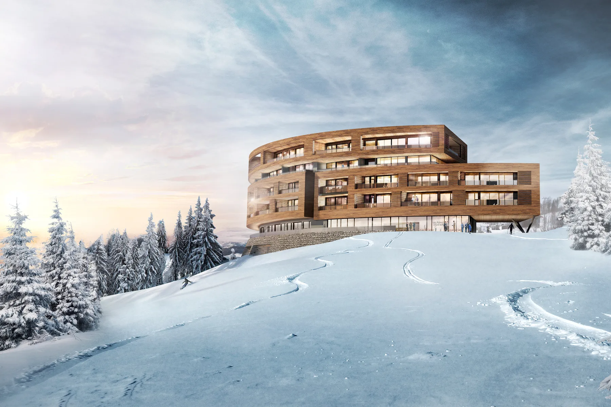
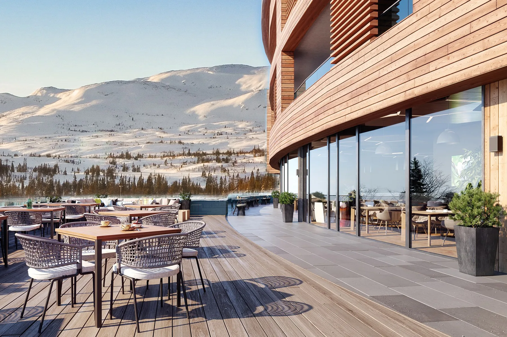
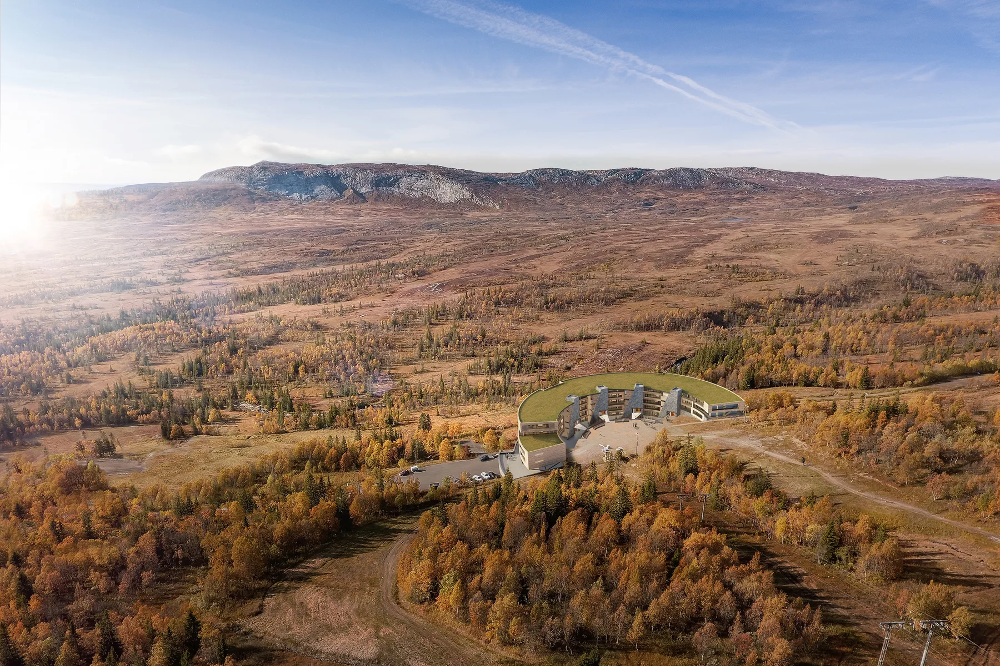
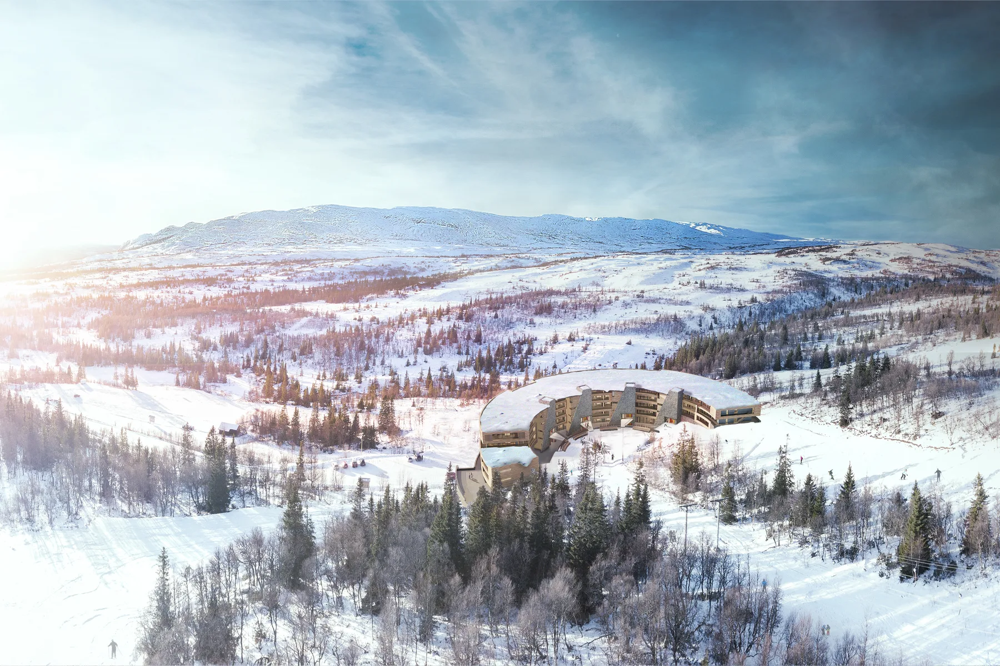
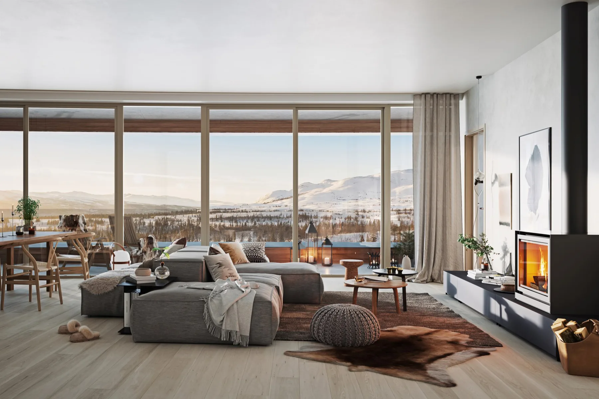
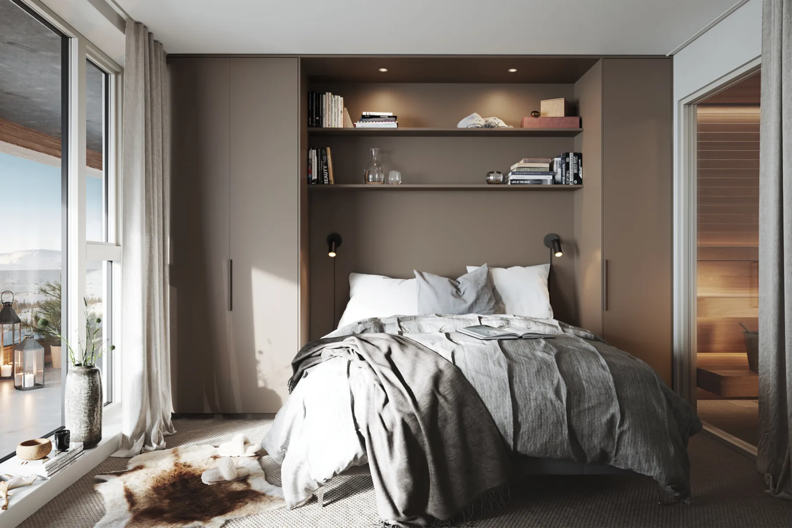
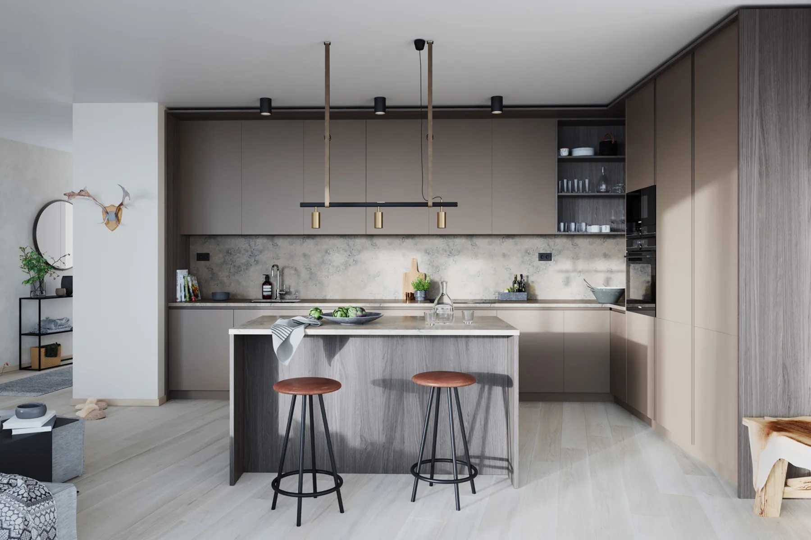
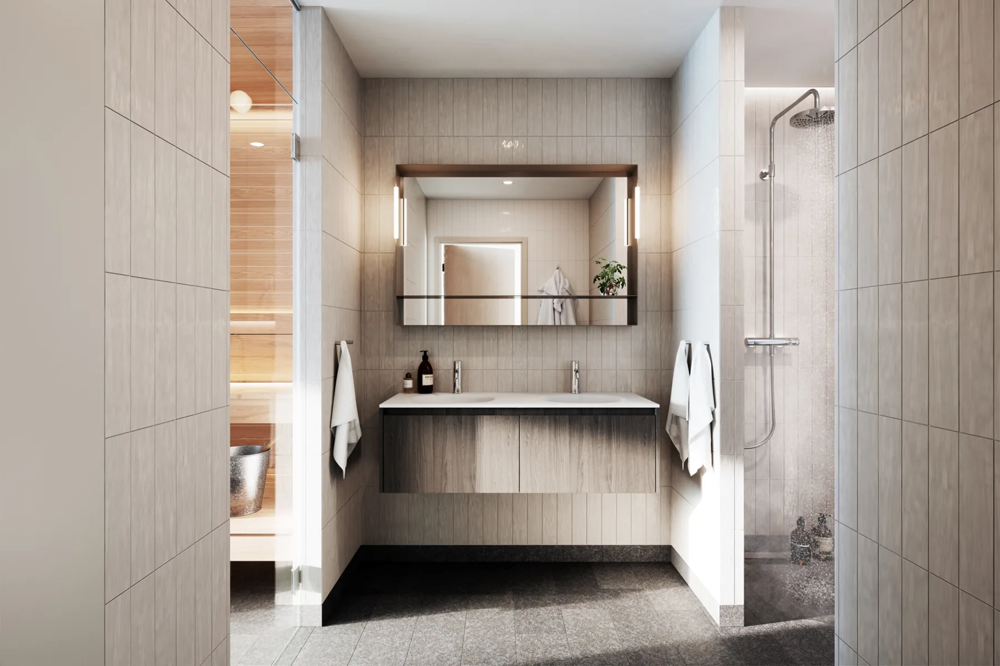
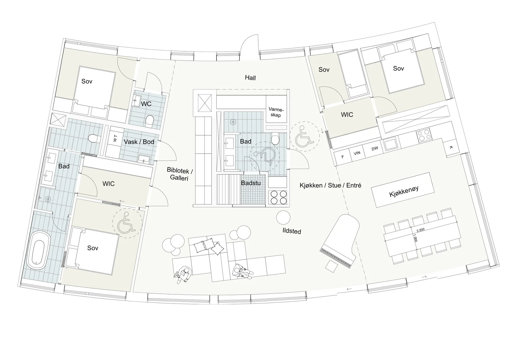

Ullådalsstugan
15Leilighetshotell
Nybygg · Næring · kontorSe bildegalleri

- Byggherre
- Ullådalsstugan i Åre
- Byggeår
- 2017 -
- Medarbeidere
- Iver Berg Blomsøy, Gunnar Stenberg, Jan-Kristian Orvik, Bodil Angard Rian
Om prosjektet
Et leilighetshotell i Ullådalen ved Åre er utformet rundt terrenget og skitrekket. Den buede bygningsformen orienterer de 64 planlagte leilighetene mot utsikten over fjellandskapet.
Bilder & tegninger9 bilder



Forstørr

Forstørr

Forstørr

Forstørr

Forstørr

Forstørr

Forstørr

ForstørrLa oss begynne med en samtale